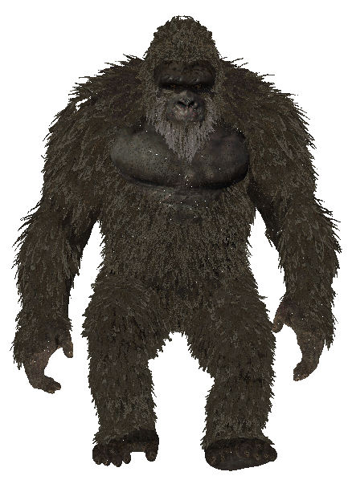
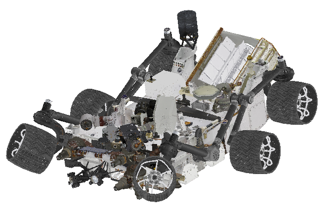

A reference dataset for content-aware V-PCC streaming and compression — 21 dynamic sequences across 6 semantic categories, 5 quality levels.
Why do nearly identical point clouds cost so differently to encode?


More points → more bits? Not quite. The scatter plot exposes a surprisingly weak link (R²=0.41) — topology and motion explain the rest.
Each dot represents one sequence. The dashed regression line shows the weak linear trend between point count and bitrate.
Key finding: R²=0.41 means point count explains only 41% of the variance in encoding bitrate. Topology, articulation, and motion are the hidden drivers.
PSNR P2P (dB) vs Bitrate for all 6 representative sequences across quality levels r1–r5. Toggle sequences to compare RD efficiency.
Drag the slider across quality levels r1–r5 to see how encoding cost scales — and diverges — per content type.
Motion energy (KME) vs Bitrate at r5. Bubble size = point count. Four quadrants reveal distinct compression regimes — and two stunning outliers.
Wardrobe's dense geometry costs 76 Mbps with nearly zero motion (KME=0.04), more than Dancing Man's full-body dance at 18 Mbps.
Gyroscope spins rapidly (KME=3.52) but encodes at just 35 Mbps — rigid geometry packs atlas tiles efficiently despite high motion.
R²=0.41 — point count alone explains less than half the variance in encoding bitrate. Structure and motion explain the rest.
Average PSNR P2P (dB) and encoding bitrate across all 6 object categories at each quality level — confirming content-dependent behaviour holds at the category level.
21 dynamic point cloud sequences across 6 semantic categories.
Five quality levels (r1–r5) with corresponding V-PCC quantization parameters.
| Rate Point | Geometry QP | Attribute QP | Occupancy Precision | Projected Bitrate Range | Use Case |
|---|---|---|---|---|---|
| r1 | 32 | 42 | 4 | 0.7 – 5.1 Mbps | Low bandwidthPreview |
| r2 | 28 | 37 | 4 | 2.0 – 9.0 Mbps | Mobile streaming |
| r3 | 24 | 32 | 4 | 5.5 – 18.5 Mbps | Standard quality |
| r4 | 20 | 27 | 4 | 14.5 – 42.0 Mbps | High qualityDesktop/XR |
| r5 | 16 | 22 | 2 | 18.0 – 85.0 Mbps | Best qualityReference |
Encoder: MPEG V-PCC (TMC2) reference software. All sequences encoded at 250 frames per sequence. The large bitrate range per quality level reflects content heterogeneity — the central contribution of this dataset.
If you use this dataset in your research, please cite:
@inproceedings{sidhu2026questpcc,
title = {{QUEST-PCC}: A Reference Dataset for Content-Aware {V-PCC} Streaming and Compression},
author = {Sidhu, Jashanjot Singh and Bentaleb, Abdelhak and Hamza, Ahmed and Gudumasu, Srinivas},
booktitle = {Proceedings of the 17th ACM Multimedia Systems Conference 2026 (MMSys '26)},
year = {2026},
month = apr,
address = {Hong Kong, Hong Kong},
publisher = {ACM},
doi = {10.1145/3793853.3799809}
}
Sidhu, J. S., Bentaleb, A., Hamza, A. and Gudumasu S. 2026. QUEST-PCC: A Reference Dataset for Content-Aware V-PCC Streaming and Compression. In Proceedings of the 17th ACM Multimedia Systems Conference 2026 (MMSys '26), April 4-8, 2026, Hong Kong, Hong Kong. ACM, New York, NY, USA, 6 pages. https://doi.org/10.1145/3793853.3799809
QUEST-PCC is freely available for research use under the Apache 2.0 License.